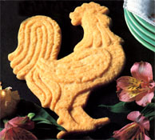

My grandma was a multitalented woman, and her cooking talent was right up there at the top of the list. Melt-in-your-mouth taste treats materialized magically from recipes long stored in her head. It's no wonder, then, that many of my fondest memories are of evenings spent basking in the warmth of the family kitchen, helping to prepare and then sampling grandma's heirloom "receipts."
One of my favorites was (and still is!) Scotch shortbread. Easily made, it's bound to elicit enthusiastic compliments . . . and it freezes well, too!
1/2 pound sweet (unsalted) butter
1/2 cup powdered sugar
2 cups sifted flour
Mix all the ingredients with a pastry blender until the dough resembles coarse meal. Then work the mixture with your hands to soften the butter, and form the dough into a ball. Pat the mixture out into an ungreased 9" by 9" pan, or into ungreased shortbread molds. If you're using a pan, pierce the dough every two inches with a fork, bake at 300°F for 40 minutes or until it's lightly browned, and cut the shortbread into small squares while still warm. If you're using shortbread molds, you may want to adjust the baking time (but not the temperature) in accordance with the size of the molds. [EDITOR'S NOTE: We baked the rooster shown for 30 minutes; the recipe filled four such molds.] When the shortbread's done, let the molds cool for about 15 minutes before turning the treat out.
Per 2" by 2" serving: 143 calories, 1.5 grams protein, 9.34 grams fat (5 grams saturated fat), 13.3 grams carbohydrates, and 375 IU vitamin A.
|
 |
|
|